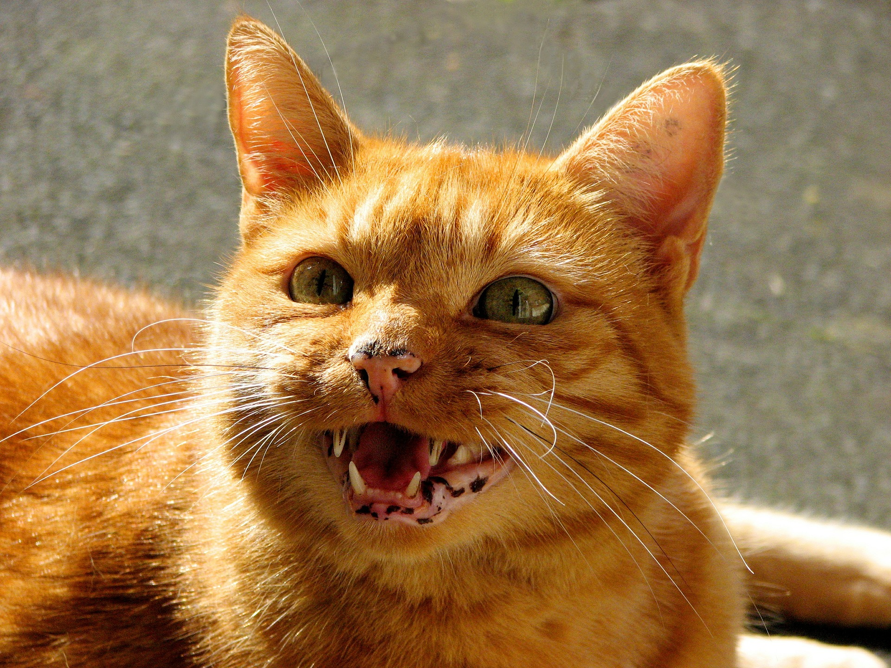

技術記事では、情報の正確さだけでなく、読者が迷わず読み進められる余白も大切です。要素を大きく見せる代わりに、文章と文章の間に十分な空間を置くと、画面全体が静かになります。
このページでは、デザインシステムの方針に沿って本文の幅を抑え、見出しと最初の内容を近づけています。段落、引用、リスト、数式は文章の流れとして扱い、コード、画像、リンクカードには広めの間隔を設けます。
余白を役割で分ける
すべての間隔を同じ値にすると、関連の強さが見えにくくなります。そこで、見出しから最初の内容までは24px、文章の流れは36px、コードや画像などの独立したブロックとの間は48pxとして、近さそのものに意味を持たせます。
- 見出しと最初の内容は、ひとつのまとまりとして扱う。
- 独立した内容ブロックには、呼吸できる余白を置く。
- フォームやナビゲーションの内部は、操作しやすい密度を保つ。
値をコードで表現する
余白の役割を名前にすると、実装者が数値を推測する必要がなくなります。たとえば、次のような小さな型でも意図を共有できます。
typescript
type ArticleRhythm = {
headingToContent: "1.5rem";
flowToFlow: "2.25rem";
detachedBlock: "3rem";
subsection: "3rem";
section: "4rem";
};
// 数値ではなく、関係を名前にする。長い文章のリズム
日本語の本文は1行が長くなりすぎると、次の行の先頭を探しにくくなります。このレイアウトでは記事幅を最大48remに制限し、本文を18px、行高を2に設定しています。
静かなデザインは、情報を薄くすることではありません。十分なコントラストを保ちながら、強調する要素を慎重に選ぶことです。
数式も同じ流れに置く
数式だけを特別に浮かせず、本文と同じ垂直リズムの中に置きます。背景や境界を加えず、日本語や英語と同じように内容そのものを読ませます。
画像と関連する記事
画像は本文を補うときだけ使います。角丸は控えめにし、キャプションを近くに置くことで、画像が何を示すのかを明確にします。


読みやすさは、目立つ要素を増やすことではなく、読者が内容に集中できる関係を整えることから生まれます。まず余白で構造を示し、その後に色や形を必要な場所だけへ加えます。
見出しの直後だけ余白を狭くする考え方が参考になりました。コードブロックとの距離も読みやすいです。
ダークテーマでも本文と補足情報の違いが分かりやすく、長い記事を落ち着いて読めました。